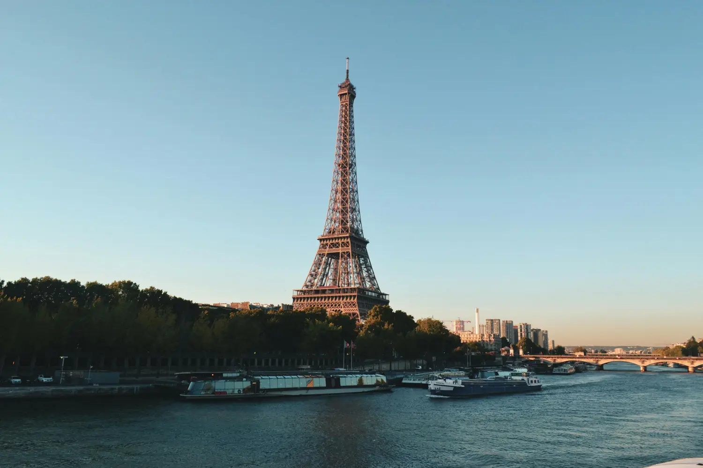

艾菲爾鐵塔 - 巴黎 - 法國
介紹
歡迎來到光之城！巴黎，浪漫氛圍、歷史魅力和世界級美食，是旅行者的夢想目的地。而在這一切的中心，矗立著宏偉的艾菲爾鐵塔——優雅和建築奇蹟的象徵。
必看景點
- 艾菲爾鐵塔：開始你的旅程，攀登這座鐵製的奇蹟。從觀景台眺望的景色令人驚嘆，尤其是在日落時分。
- 羅浮宮博物館：作為蒙娜麗莎和無數其他傑作的家園，羅浮宮是藝術愛好者的天堂。
- 巴黎聖母院：欣賞其哥德式建築，並探索西岱島。
- 香榭麗舍大道：漫步於這條林立著精品店、咖啡館和劇院的宏偉大道。
活動推薦
- 塞納河遊船：登上遊船，沿著塞納河滑行，穿越迷人的橋樑。
- 蒙馬特：攀登蒙馬特山，欣賞全景，並參觀聖心大教堂。
- 盧森堡公園野餐：在這片寧靜的綠洲中放鬆，周圍環繞著噴泉和雕塑。
- 聖禮拜堂：欣賞其壯麗的彩色玻璃窗。
體驗活動
- 日落野餐：準備一條法棍、奶酪和葡萄酒，並在艾菲爾鐵塔附近享受一場浪漫野餐。
- 攝影之旅：從不同角度拍攝艾菲爾鐵塔，發掘隱藏的寶藏。
- 烹飪課程：學習如何像真正的巴黎人一樣製作可頌或馬卡龍。
- 時尚漫步：探索馬萊區的設計師精品店。
戶外冒險
- 沿塞納河騎行：租一輛自行車，沿著河畔騎行。
- 聖馬丁運河泛舟：探索迷人的水閘和河畔咖啡館。
- 朴德夏蒙公園：在這個丘陵公園徒步，欣賞壯麗的景色。
文化活動與節慶
- 巴士底日（7月14日）：在艾菲爾鐵塔附近觀賞煙火和慶祝活動。
- 巴黎時裝週：感受高級訂製服和街頭時尚的魅力。
- 音樂節（6月21日）：在城市各地享受免費音樂會。
美食與葡萄酒之旅
- 馬萊區美食之旅：品嚐法式糕點、奶酪和肉類拼盤。
- 蒙馬特品酒：在迷人的景色中品嚐當地葡萄酒。
- 米其林星級餐廳：犒賞自己一頓精緻的美食。
購物區
- 聖奧諾雷街：奢華精品店琳瑯滿目！
- 馬萊區：古著店、時尚精品店和獨特發現。
- 老佛爺百貨公司：時尚愛好者的宏偉百貨商店。
住宿
- 柏悅酒店：香榭麗舍大道旁的奢華住宿。
- 小磨坊酒店：馬萊區內獨特風格的精品酒店。
- Airbnb：入住迷人的公寓，體驗當地人的生活。
餐飲與夜生活
- 赫布瓦餐廳：經典的小酒館料理。
- 蘭布瓦西餐廳：米其林三星餐廳。
- 柏悅酒店酒吧：在美景中品嚐雞尾酒。
交通方式
- 地鐵：高效且連接良好。
- Vélib’ 自行車：租一輛自行車進行短途旅行。
- 步行：巴黎最適合徒步探索。
小貼士與必備品
- 跳過排隊門票：提前預訂熱門景點的門票。
- 學習基本法語短語：這會提升你的體驗。
- 安全：在人多的地方注意防範扒手。